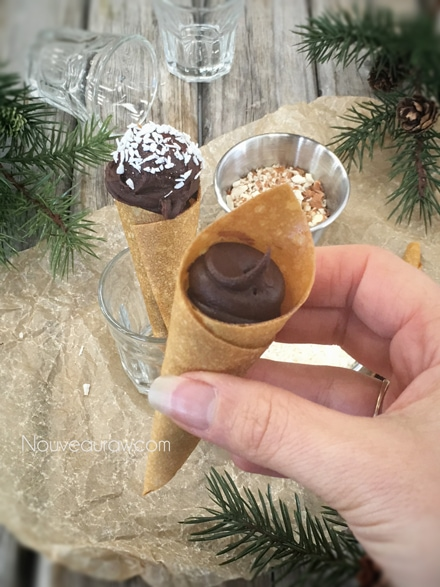
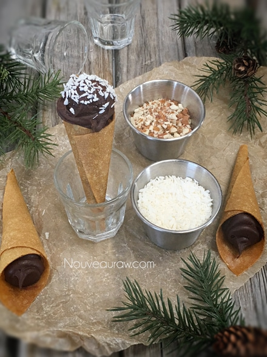

Chocolate Ganache Banana Cones

~ raw, vegan, gluten-free ~
I love how organically this dessert came to life. One afternoon I was busy making raw truffles using ganache as the center. While I sat there staring down at my leftover ganache and wondering what to do with it… my husband picked up some banana fruit leather wraps that I had pulled out of the dehydrator, and I watched him roll one into a cone shape as he walked off with it. He is always sneaking (or so he thinks he is sneaking) off with treats when I am in the whirlwind of creation.
So I took the banana fruit leather, cut it into squares and rolled it into a cone shape, and wet the edge to seal them together. Then I piped ganache down into the cone cavity and placed a small cookie scoops-worth on the top, making it appear like an ice cream cone.
From there I dipped it in some crushed almonds and shredded coconut. As you can see they turned out adorable.
One of the many great things about this treat is that you can make it well in advance and keep it stored in the freezer. Ganache never freezes solid, so it is perfect right out of the icebox.
You can make these cone desserts as big or small as you want them but I will advise you to stay on the smaller end of things. The ganache is quite decadent, and a little bit goes a long way.
I thought of a really cute way to display them for a party. Take a piece of crafters foam and wrap the four sides with decorative craft or wrapping paper. Lay a piece of plastic wrap over the top. Then take the eraser tip of a pencil and poke holes in the foam, pushing the plastic wrap into the hole. This will protect the cone from getting gritty foam on it. Then place the tips of the cone into the holes, acting as a holder. To disguise the plastic wrap, sprinkle shredded coconut over the top. Now you have a free-standing holder for your festive dessert. Well, just an idea anyway. :) Enjoy and have a blessed day, amie sue
Ingredients:
Preparation:
- Ingredient quantities will vary depending on how many and what you want to make them.
- In a food processor or blender, blend the bananas to a smooth texture.
- Pour the batter onto the non-stick sheets that come with the dehydrator and spread into a thin square shape.
- If you don’t have non-stick sheets, use parchment paper, not wax paper.
- Don’t spread too thin or it will create holes when drying.
- Dehydrate at 145 degrees (F) for 1 hour, then reduce to 115 degrees (F) and continue to dry for 10+ hours.
- Dry times will always vary on how thick or thin you spread it, the climate and humidity that you live in.
- Once dry enough, flip the banana leather onto the mesh sheet and peel off the non-stick sheet and continue to dry until you can touch the leather and it doesn’t stick to your hand. It should still be pliable.
- To store, lay a large enough sheet of plastic wrap on the counter, place the leather in the center, fold one edge of the plastic onto the leather, and roll it into a tube.
Assembly:
- Cut the leather into equal-sized squares.
- Roll into a cone shape, wetting the edges, so they stick together. If you have Cream Horn Molds (scroll towards the bottom of the Amazon page), you can use that to help shape the cones.
- Pipe the ganache into the cone and then using a small cookie scoop, place a dollop on top, so it looks like an ice cream cone.
- Dip in crushed nuts or shredded coconut.
- Enjoy right away (as Bob did hehe) or store them in the freezer for up to a month.
Culinary Explanations:
- Why do I start the dehydrator at 145 degrees (F)? Click (here) to learn the reason behind this.
- When working with fresh ingredients, it is important to taste test as you build a recipe. Learn why (here).
- Don’t own a dehydrator? Learn how to use your oven (here). I do however truly believe that it is a worthwhile investment. Click (here) to learn what I use.


© AmieSue.com